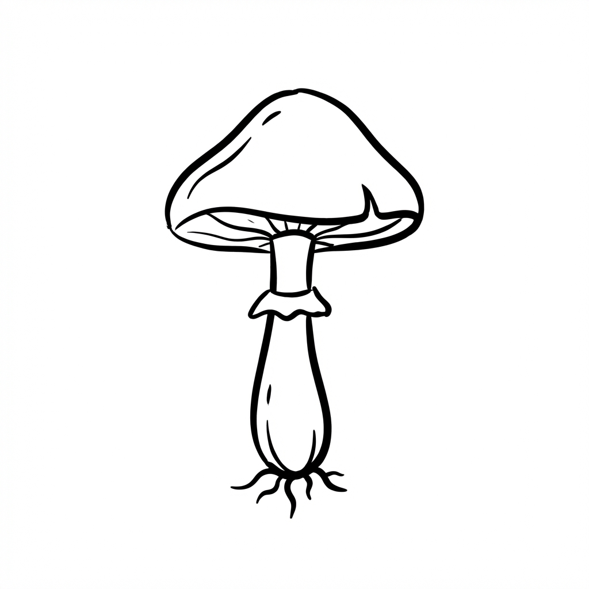
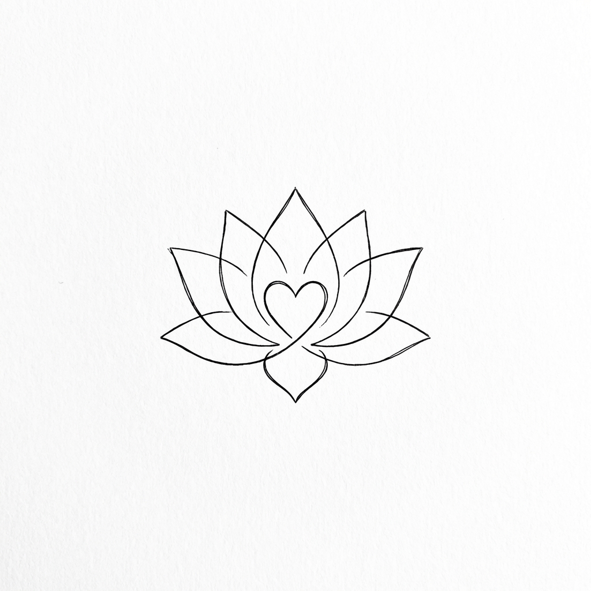

Caminos de Sanación

Sesión con
Psilocibina
Información de sesiones con hongos y sus beneficios.
Terapia
Capilar Consciente
Terapia de masaje capilar y relajación profunda.
Sesiones de
Kundalini Yoga y Meditación
Clases y sesiones guiadas para el bienestar integral.

Terapia
Holística
Sesiones holísticas personalizadas para el bienestar integral.